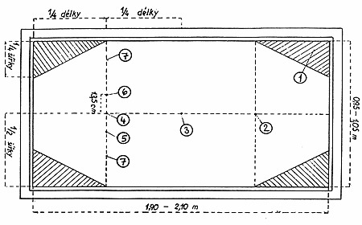
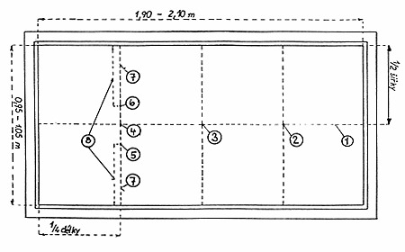
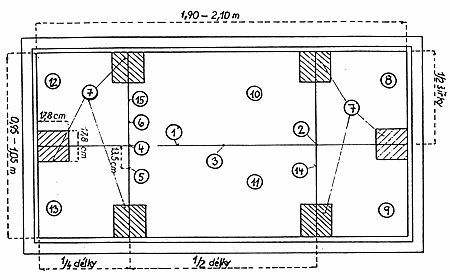
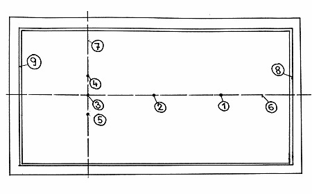

Kapitola I. Nástroje
Herna a její vybavení
Rozdělení kulečníkových stolů podle velikosti
Kulečníkové stoly, mantinely a sukno
Kulečníkové koule a křídy
Tága
Osvětlení kulečníkového stolu
Tečky a startovní čára
Kapitola II. Společná ustanovení pro všechny druhy her
Provedení rozhodovacího strku
Začáteční strk
Strk ( karambol )
Základní pravidlové názvosloví
Lpící koule
Koule vyhozené z kulečníkového stolu
Tágo
Konec partie ( utkání ) a výsledek zápasu
Chyby
Kapitola III. Zvláštní ustanovení pro jednotlivé druhy kulečníkové hry
Kapitola IV. Zakreslení čar a bodů na hrací ploše
Zakreslení základních čar a bodů na hrací ploše
malého kulečníkového stolu
Zakreslení základních čar a bodů i zakázaných polí na
malém kulečníkovém stole při tzv. volné hře.
Zakreslení základních bodů, čar, kádrových polí a
kotvových čtverců při tzv. velkém kádru 47, 5/2 a 47, 5/1 na hrací ploše malého
kulečníkového stolu
Umístění koulí při čtyřlomu na kulečníkovém stole po
vyhození koulí z hrací plochy
I. NÁSTROJE
Herna a její vybavení
Podlahu herny kolem kulečníkových stolů je nutno opatřit neklouzavou krytinou či kobercem. V hernách by měl být volný prostor kolem každého kulečníkového stolu minimálně 1,2 m a vzdálenost kulečníkových stolů od stěny místnosti nejméně 1,5 m.
Rozdělení kulečníkových stolů podle velikosti
CEB (Confédération Européenne de Billard) i UMB (Union mondiale de Billard) pořádají všechny své soutěže pouze na kulečníkovém stole 284 x 142 cm, přesto ale uznávají a přepočtem i porovnávají výsledky docílené na kulečníkových stolech těchto rozměrů:
- Halbmatchbillard 255 x 127,5 cm
- Deminatchbillard 230 x 115 cm
- malý stůl 210 x 105 cm
- Rozměry malých kulečníkových stolů používaných v ČR jsou 190 x 95 cm až 210 x 105 cm.
Kulečníkové stoly, mantinely a sukno
Kulečníkový stůl se skládá z masivního podstavce, desky a rámu s nalepenými gumovými mantinely. Pevnost podstavce ale i jeho hmotnost přispívá k lepší stabilitě celého stolu.
Deska kulečníkového stolu je z břidlice o síle minim. 45 mm. Tento předpis platí pro všechny mezinárodní turnaje CEB. Pro soutěže organizované v ČR, pokud nepůjde o mezinárodní turnaj CEB, lze nahradit břidlici materiálem schváleným výkonným výborem ČMBS (např. mramorem).
Hrací plocha desky je ohraničena gumovými mantinely, které jsou nalepeny na rámu stolu. Vrchol gumového mantinelu, který přichází do styku s koulí musí být vždy o 4 - 5 mm vyšší než je poloměr koulí, tj. cca 35 - 37 mm nad hrací plochou. Rám je dřevěný, jeho povrch hladký a jednobarevný. Musí však mít ozdobné vykládání (značky, diamanty), a to v 1/8 hrací plochy od sebe.
Výška nejvyššího bodu kulečníkového stolu měřená od podlahy je stanovena v rozmezí 79 až 80 cm.
Kulečníkové sukno, jímž je deska potažená, má mít pokud možno zelenou barvu, být maximálně rychloběžné, na stole dokonale a na gumovém mantinelu přiměřeně vypnuté a před každým zápasem pečlivě vyčištěné.
Kulečníkové koule a křídy
Kulečníkové koule jsou tři (sada) a výrobce/dodavatel musí být schválen CEB. Dvě z nich mají barvu bílou odstínu slonoviny, třetí je zbarvená červeně. Jedna z bílých koulí má na protilehlých místech nesmazatelnou značku (tečku). Pro lepší rozlišení je pro televizní přenos povoleno nahradit bílou kouli žlutou stejných parametrů.
Koule musí být hladké, lesklé a přesně kulaté s průměrem 61 až 61,5 mm. Hmotnost jedné koule může být 205 až 220 gramů, přičemž rozdíl mezi jednotlivými koulemi nesmí překročit 2 gramy (u turnajů CEB 1 gram). Vyjímku tvoří koule pro trojmantinelovou hru (kvarty), které mohou mít hmotnost až 240 gramů pro jednu kouli. Ostatní parametry jsou stejné jak je shora uvedeno.
Kulečníková křída slouží k mazání kůžičky tága proti skluzu. Používá se křída schválená CEB.
Tága
Obvyklým materiálem na výrobu tág je dřevo, může však být použito i jiného materiálu. Tágo je pro lepší skladnost půlené (může být i více dílů), přičemž spodní půlka je z těžšího materiálu (palisandr, mahagon, eben, cedr, javor, ořech apod.), popříp. je zatěžována přidáváním kovových kroužků; vrchní díl tága je z pružného materiálu (javor, jasan, hruška, ořech, zimostráz apod.) a na konci je opatřen kůžičkou. Hráč smí hrát výhradně touto kůžičkou. Hráč má právo i v průběhu své série střídat tága různých délek a hmotností.
Obvyklá délka tága je 140 cm s těžištěm v 95 cm. Hmotnost se pohybuje mezi 400 až 500 gramy. Pro trojmantinelovou hru a artistický billiard je hmotnost vyšší - až 700 gramů.
Při obtížných karambolech na velkém kulečníkovém stole může hráč použít podpěrky tága jako náhradu za vodící ruku.
Osvětlení kulečníkového stolu
K osvětlení kulečníkových stolů se nejčastěji používá elektrické žárovky. Pro stejnoměrné osvětlení hrací plochy se doporučuje umístit nad malý stůl 2 svítidla, nad velký stůl 3 svítidla, a to vždy nad tečkami stolů.
Výška svítidel od hrací plochy má být v rozmezí 80 - 150 cm. Pokud bude použito svítidel s halogenní žárovkou, musejí být umístěna nejméně 400 cm od hrací plochy.
Pokud je normální elektrická žárovka umístěna nad kulečníkovým stolem, musí být zabudována do stínidla tak hluboko, aby přímým světlem hráče ani okolí neoslňovala.
Tečky a startovní čára
Pod pojmem tečky se rozumějí výchozí místa, která musí zaujímat kulečníkové koule:
- na začátku partie (utkání)
- v průběhu utkání, jakmile se koule zastavily při vzájemném dotyku - lpící koule
- v případě, že koule byly vyhozeny mimo kulečníkový stůl
Tyto tečky se vyznačují co nejtenčím křížkem křídou nebo bílou tužkou. Označení pomocí nalepeného dykytového kolečka je zakázáno.
Tři z pěti teček jsou umístěny na svislé ose malého kulečníkového stolu tak, že ji dělí na čtyři stejné části. Další dvě tečky jsou umístěny na startovní čáře, která tvoří kolmici ke svislé ose kulečníkového stolu vztyčenou v místě dolní tečky. Obě startovní tečky jsou umístěny ve vzdálenosti 13,5 cm nalevo a napravo od této dolní tečky.
II. SPOLEČNÁ USTANOVENÍ PRO VŠECHNY DRUHY HER
Provedení rozhodovacího strku
Utkání začíná, jakmile rozhodčí rozestaví obě bílé koule k rozhodovacímu strku na startovní čáru vlevo a vpravo od obou startovních teček k odrazníkům a červenou kouli na horní tečku.
Oba hráči zahrají každý svou koulí na horní odrazník. Ten jehož koule se po návratu zastavila blíže k dolnímu odrazníku, má právo volby začátku.
Jestliže se koule při rozhodovacím strku srazily nebo zastavily ve stejné vzdálenosti od dolního odrazníku, dá rozhodčí rozhodovací strk opakovat.
Jestliže koule jednoho z hráčů narazí na červenou kouli, považuje se to za chybu a právo volby začátku partie náleží druhému hráči, který se chyby nedopustil.
Jestliže koule některého hráče nedoběhne na horní mantinel, musí se rozhodovací strk rovněž opakovat. Při druhé takové chybě téhož hráče ztrácí chybující hráč právo rozhodnout, kdo zahájí zápas.
Začáteční strk
Koule pro začáteční strk rozmístí rozhodčí takto:
- červenou kouli na horní tečku,
- soupeřovu bílou kouli (kouli s tečkou nebo žlutou kouli) na dolní tečku
- hráčovu bílou kouli (bez tečky) na jednu z obou startovních teček podle volby hráče.
Začáteční strk je nutno hrát bílou koulí bez tečky od červené koule buď přímo, nebo od odrazníku. Každý z obou hráčů musí hrát stejnou koulí po celou dobu zápasu.
Strk (karambol)
Účelem hry je dosáhnout (sehrát) co nejvíce strků.
Strk (karambol) zidná, že se hráčova koule dotkne obou ostatních koulí, tedy protihráčovy a červené koule (bez ohledu na pořadí koulí), v některých případech podle druhu hry (disciplíny) za dalších podmínek určených těmito pravidly hry.
Partie (utkání) spočívá v provedení určitého počtu strků (stanovené výše hry), různého podle disciplíny hry. Všeobecně se každý strk počítá za jeden bod.
Hráči musí zachovat tutéž kouli po celou dobu utkání.
Základní pravidlové názvosloví
Označení koulí se upřesňuje takto:
- koule hrajícího hráče uvádíme pod číslem 1 (tzv. hráčova koule)
- první zasažená koule má číslo 2
- druhá zasažená koule je uvedena jako koule číslo 3
- koule č.2 a č.3 jsou také uváděny jako "cizí koule"
Účelem hry je sehrát co nejvíce karambolů, přičemž každý zahraný karambol má hodnotu 1 bod.
Náběh je pokus hráče o dosažení karambolu. Počet náběhů v jedné hře je různý podle soutěžní disciplíny (např. 30).
Vyrovnávací náběh je závěrečný náběh, kterým hráč s bílou koulí označenou tečkou dosáhl stejného počtu náběhů jako jeho soupeř (viz. "Konec a výsledek zápasu").
Série je počet karambolů dosažený hráčem v jednom náběhu.
Pro jednotlivé soutěžní disciplíny a soutěžní třídy se stanoví předem počet karambolů, tzv. výše hry (např. u volné hry - 200, 300, 400, u kádrových her - 200, 250, 300, u jednobandu - 120, 80 a u trojbandu - 40, 30).
Lpící koule
Když hráčova koule lpí, tj. dotýká se jedné nebo obou dalších koulí, řídí se hráčova práva ustanoveními odchylnými pro různé druhy hry (disciplíny).
Koule vyhozené z kulečníkového stolu
Vypadne-li jedna kulečníková koule (nebo více koulí) mimo kulečníkový stůl, postaví se na tečky odchylně při jednotlivých druzích (disciplínách) hry.
Koule se považuje za vyhozenou mimo kulečníkový stůl, jakmile dopadla mimo ohraničení stolu (přesněji ohraničení hrací plochy), popřípadě se dotkla dřevěné části tohoto ohraničení.
Tágo
Hráč má právo hrát vlastním tágem.
Hráč smí hrát výhradně kůžičkou tága.
Konec partie (utkání) a výsledek zápasu
Každá započatá partie (utkání) musí být sehrána do posledního karambolu nebo je-li stanoven limitovaný počet náběhů (tzv. limit), musí se dohrát do posledního náběhu.
Jakmile rozhodčí po ohlášení posledního karambolu uzná i tento poslední za platný, zidná to přiznání plného počtu karambolů, který byl pro příslušný zápas stanoven (výše hry),a to i v případě, že by se dodatečně zjistila chyba v zápise o průběhu zápasu.
Vítězství v zápase se určuje podle těchto kritérií:
- V zápase vítězí hráč, který při stejném počtu náběhů se svým soupeřem (do stanoveného limitu) dosáhl stanovenou výši hry. Dosáhnou-li oba hráči při stejném počtu náběhů (do stanoveného limitu) stanovenou výši hry, je výsledek zápasu nerozhodný.
- Při limitovaném počtu náběhů a nedosažením stanovené výše hry vítězí hráč, který po odehrání limitovaného počtu náběhů nahrál vyšší počet karambolů. Dosáhnou-li oba hráči po odehrání limitovaného počtu náběhů stejný počet karambolů, je výsledek zápasu nerozhodný.
Pozn.: Oba hráči musejí absolvovat stejný počet náběhů, pokud není určeno v rozpisu soutěže jinak.
Jestliže hráč s bílou koulí (zahajoval zápas) dosáhl stanovenou výši hry, tj. nahrál předepsaný počet karambolů nebo sehrál poslední náběh (při stanoveném limitu), musí jeho soupeř (tj. hráč s bílou koulí s tečkou) sehrát ještě vyrovnávací náběh, který se hraje ve všech soutěžních disciplínách z pozice začátečního karambolu.
Dosáhne-li v průběhu vyrovnávacího náběhu i druhý hráč stanoveného počtu strků (výše hry), je partie (utkání) prohlášena za nerozhodnou.
Chyby
Karambol (strk) je platný teprve tehdy, když se všechny tři kulečníkové koule zastavily, aniž hráč v mezidobí udělá chybu.
Hráč udělá chybu a pozbývá práva pokračovat ve hře (v sérii, náběhu) v těchto případech:
- Když hráč neuspěje v provedení karambolu (strku). Rozhodčí oznámí "Nebyl" nebo "Vynecháno".
- Když při provedení strku jedna koule, popřípadě více koulí opustí kulečníkový stůl, ať již bylo dosaženo karambolu nebo nebylo. Rozhodčí oznámí "Vyhozená koule".
- Když hráč hraje další strk, aniž se koule zastavily po provedení předcházejícího strku. Rozhodčí oznámí "Koule v pohybu".
- Když se hráč dotkne ("tušuje") kterékoli koule buď rukou, nebo tágem, popřípadě jakýmkoli jiným předmětem. V každém případě zůstává "tušovaná" koule na místě, které zaujala. Rozhodčí oznámí "Dotyk" nebo "Tušováno".
- Když se hráč dotkne koule, aby odstranil cizí tělísko, které na ni ulpělo, místo aby požádal rozhodčího o odstranění závady. Rozhodčí oznámí "Dotyk" nebo "Tušováno".
- Když hráč přemístí kouli přímým nebo nepřímým dotykem. Rozhodčí oznámí "Dotyk" nebo "Tušováno".
- Když hráč prostrčí kouli. Prostrčením se rozumí:
- když je kůžička tága ještě v dotyku s hráčovou koulí v okamžiku, kdy hráčova koule naráží na druhou kouli,
- když je kůžička hráčova tága ještě v dotyku s hráčovou koulí v okamžiku, kdy hráčova koule naráží na mantinel,
- když je přímo zasažena koule, která lpí s hráčovou koulí, vyjma oddělení obou koulí od sebe sbodcem.
- Když se hráč v okamžiku zasažení koule nedotýká země alespoň jednou nohou. Rozhodčí oznámí "Noha na zemi".
- Když hráč vyznačuje na odrazníku viditelné značky (zidní). Rozhodčí oznámí "Značkování odrazníku".
- Když hráč při zahájení náběhu nebo v jeho průběhu hraje podle zjištění rozhodčího protivníkovou (tzv. cizí) koulí. V tomto případě ztrácí hráč ihned právo pokračovat v náběhu (sérii). Koule zůstávají v pozici (postavě), kterou zaujaly, a hry se ujímá protivník. Počet strků dosažených v průběhu série (náběhu) před zjištěním této chyby se hráči uzná. Rozhodčí oznámí "Soupeřova (cizí) koule".
Dosáhne-li hráč dalšího strku potom, když se při provedení předcházejícího karambolu dopustil chyby, kterou rozhodčí nezjistil, je strk platný a hráč smí ve své sérii (náběhu) pokračovat.
Jakákoli chyba zaviněná třetí osobou, popřípadě i rozhodčím, která přivodí přemístění koulí, se nepřičítá hráči. V tomto případě vrátí rozhodčí koule do postavy (pozice), ve které byly před chybou, a to co nejpřesněji. Naproti tomu je však hráč postižen v případě, že rozhodčí špatně rozestavil bílé koule na základní tečky (při začátečním strku).
III. ZVLÁŠTNÍ USTANOVENÍ PRO JEDNOTLIVÉ DRUHY (DISCIPLÍNY) KULEČNÍKOVÉ HRY
Volná hra
Při volné hře může hráč v jednom sledu (jedné sérii či jednom náběhu) sehrát neomezený počet strků (karambolů) na celé ploše kulečníkového stolu (přesněji na hrací ploše) vyjma rohová zakázaná pole.
Zakázaná pole
Tato pole jsou ohraničena co nejtenšími čarami křídou.
V každém z těchto zakázaných polí smí hráč sehrát v průběhu svého náběhu nejvýše dva po sobě následující strky, přičemž při druhém z nich musí alespoň jedna z obou cizích koulí, buď protihráčova bílá, nebo červená, opustit zakázané pole, v němž byly.
Jedna, popřípadě obě cizí koule se mohou po opuštění zakázaného pole ihned do téhož pole vrátit. V tomto případě získává hráč znovu právo na provedení prvého karambolu uvnitř zakázaného pole.
Jestliže při zahraném karambolu, při němž měla koule pole opustit, žádná z koulí č.2 nebo č.3 tak neučinila, je karambol neplatný (chyba) a ve hře pokračuje soupeř.
O partii (utkání)
- Lpící koule
všechny tři koule musí být rozestaveny na tečky do postavy jako při začátečním strku. - Koule vyhozené mimo kulečníkový stůl
všechny tři koule musí být rozestaveny na tečky do postavy jako při začátečním strku. - Koule na čáře zakázaného pole
koule na čáře ohraničující zakázané pole se posuzují v neprospěch hráče.
Zakreslení základních čar a bodů na hrací ploše malého kulečníkového stolu

1. svislá osa hrací plochy
2. horní tečka
3. střední tečka
4. dolní
tečka
5. pravá startovní tečka vzdálená 13,5 cm od dolní tečky (4)
6. levá startovní
tečka vzdálená 13,5 cm od dolní tečky (4)
7. startovní čára
8. prostor nalevo a napravo
od startovních teček (5,6) směrem k bočním odrazníkům, do kterého staví rozhodčí koule obou
hráčů k provedení rozhodovacího strku.
Zakreslení základních čar a bodů i zakázaných polí na malém kulečníkovém stole při tzv. volné hře

1. čtyři pravoúhlé trojúhelníky v rozích, tzv. zakázaná pole
2. horní
tečka
3. střední tečka
4. dolní tečka
5. pravá startovní tečka vzdálená 13,5 cm od
dolní tečky (4)
6. levá startovní tečka vzdálená 13,5 cm od dolní tečky (4)
7. prostor
nalevo a napravo od startovních teček (5,6) směrem k bočním odrazníkům, do kterého staví
rozhodčí koule obou hráčů k provedení rozhodovacího strku.
Zakreslení základních bodů, čar, kádrových polí a kotvových čtverců při tzv. velkém kádru 47,5/2 a 47,5/1 na hrací ploše malého kulečníkového stolu

1. svislá osa středem hrací plochy a současně středová kádrová čára, která půlí
šířku hrací plochy (přesně 47,5 - 50 - 52,5 cm)
2. horní tečka
3. střední tečka
4.
dolní tečka
5. a 6. pravá a levá startovní tečka, vzdálená 13,5 cm od dolní tečky (4)
7.
šest kotvových čtverců (o straně 17,8 cm) u odrazníků na kádrových čarách , které tyto kotvové
čtverce půlí
8., 9., 12., a 13. čtyři kádrové čtverce (o straně 47,5 - 50 - 52,5 cm) u
krátkých mantinelů
10. a 11. dvě obdélníková kádrová pole ve střední části hrací plochy
14.
horní kádrová čára našíř hrací plochy, vzdálená 47,5 - 50 - 52,5 cm od hrany krátkého
odrazníku
15. dolní kádrová čára našíř hrací plochy, vzdálená 47,5 - 50 - 52,5 cm od hrany
dolního krátkého odrazníku
Umístění koulí při čtyřlomu na kulečníkovém stole po vyhození koulí z hrací plochy

1. horní tečka, na kterou rozhodčí staví vyhozenou červenou kouli
2. střední
tečka, na kterou rozhodčí staví vyhozenou kouli protihráče
3. dolní tečka, na kterou
rozhodčí staví hráčovu kouli
4., 5. pravá a levá startovní tečka, vzdálené od dolní tečky
13,5 cm vlevo a vpravo
6. svislá (podélná) osa hrací plochy vzdálená od hran postranních
odrazníků 47,5 - 50 - 52,5 cm
7. startovní čára spojuje hrany obou postranních mantinelů,
prochází dolní tečkou (3) a oběma startovními tečkami (4,5)
8. horní krátký mantinel
9.
dolní krátký mantinel
Pradidlá probrána ze stránky http://www.heltakoop.cz/pravidla/pravidla-kulecniku-karambol.